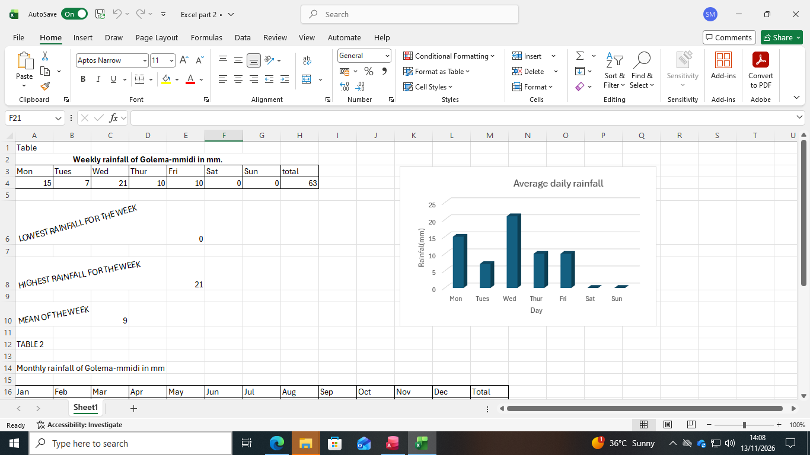
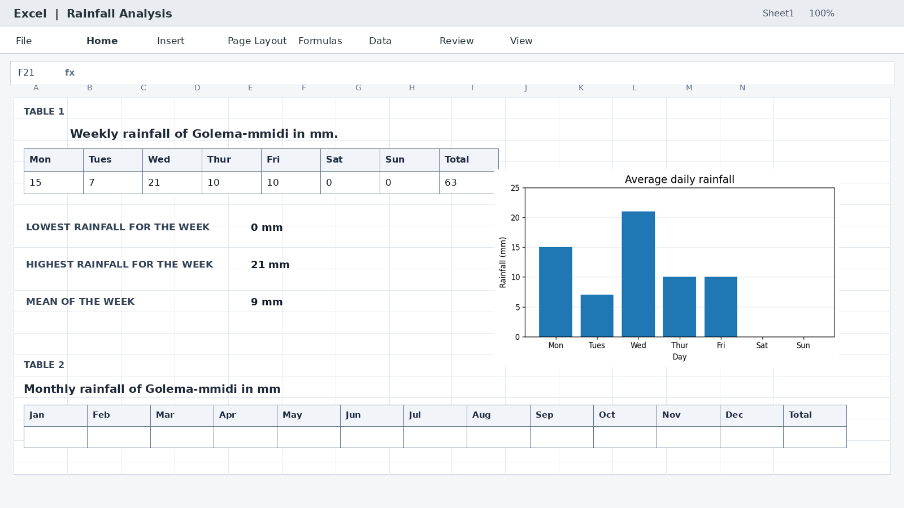

BUSINESS INTELLIGENCE & DATA ANALYTICS STUDENT
Hello, I'm Sylvia Setso Motsamai
Aspiring Data Analyst
Welcome to my portfolio! I am a first-year Business Intelligence and Data Analytics student at Botswana Accountancy College, passionate about learning, developing my skills, and exploring the world of data.

GET TO KNOW ME
About Me
My name is Sylvia Setso Motsamai. I am a first-year student at Botswana Accountancy College, pursuing Business Intelligence and Data Analytics.
I am an enthusiastic and hardworking student who is eager to develop my knowledge and technical abilities. I enjoy learning, researching, solving problems and working with others.
My goal is to build a strong foundation in data analytics and use data to help organisations make informed decisions.
Institution: Botswana Accountancy College
Programme: Business Intelligence and Data Analytics
Career Interest: Data Analysis
Interest: Listening to music
MY ACADEMIC JOURNEY
Education
Botswana Accountancy College
Business Intelligence and Data Analytics
First-year student
Developing knowledge in statistics, data analytics, computer technology, business finance, and communication skills.
Madiba Senior Secondary School
Completed in 2025
Points: 38
Subjects included English, Mathematics, Agricultural Science, Business Management, General Science, Setswana and Religious Education.
WHAT I AM DEVELOPING
My Skills
Technical Skills
- Microsoft Excel - basic spreadsheet skills
- Microsoft Access - basic database skills
- Microsoft Word - document preparation
- Microsoft PowerPoint - presentations
- Internet research
Personal Skills
- Communication
- Teamwork
- Problem-solving
- Attention to detail
- Honesty and integrity
- Willingness to learn
- Research skills
MY ACADEMIC EXPERIENCE
Projects

Rainfall Data Analysis
Microsoft Excel

Organised weekly and monthly rainfall figures in spreadsheet tables and used formulas to calculate the weekly total, lowest rainfall, highest rainfall and mean rainfall.
Created a column chart to compare daily rainfall across the week and make the data easier to understand.
Skills demonstrated: Data entry, spreadsheet formulas, basic descriptive statistics, tables and charting.
Topstretch Management System
Microsoft Access
Developed a database application with a main menu that brings together customer, employee, inventory and sales information. The interface provides navigation to data-entry forms, queries and a sales report.
Skills demonstrated: Database organisation, forms, queries, reports and user-interface design.
Customer Records Database
Microsoft Access
Created and populated a customer table containing customer records, names, locations and contact fields as part of database practice.
Skills demonstrated: Creating tables, entering records and organising structured information.
Academic demonstration using sample records; personal customer details are not published here.
First-Year Student Challenges
Communication and Study Skills
Participated in a group presentation about challenges faced by first-year students and recommendations for overcoming them. I contributed research and presented my part of the project.
LEARNING AND PERSONAL DEVELOPMENT
Academic Reflection
My Learning Experience
My academic journey has taught me the importance of discipline, time management and personal responsibility.
Challenges I Have Faced
Some of my challenges include meeting assignment deadlines and balancing school responsibilities with my personal life.
My Study Habits
I practise using past examination papers and write short notes to help me understand and remember important concepts.
Use of Technology
I use my laptop to complete assignments and the internet to conduct academic research.
Personal Growth
I am learning to manage academic pressure, become more independent and listen to other people's opinions.
Teamwork and Group Development
During a group project, we experienced communication challenges. We responded by dividing tasks more clearly. This taught me the importance of teamwork, communication and listening to others.
The Tuckman Stages of Group Development
- Forming: Members meet and understand the task.
- Storming: Members may experience disagreements or challenges.
- Norming: Members establish cooperation and shared responsibilities.
- Performing: Members work together to achieve their goals.
- Adjourning: The group completes its task and reflects on the experience.
LOOKING AHEAD
My Career Goals
My goal is to improve my academic performance, strengthen my technical skills and graduate successfully.
I aspire to become a Data Analyst and explore opportunities in banks and other financial institutions, where I can use data to support informed business decisions.
LET'S CONNECT
Contact Me
Thank you for visiting my portfolio. I welcome opportunities to learn, connect and grow professionally.
Email: Motsamaisylviasetso@gmail.com
Phone: +267 77774652